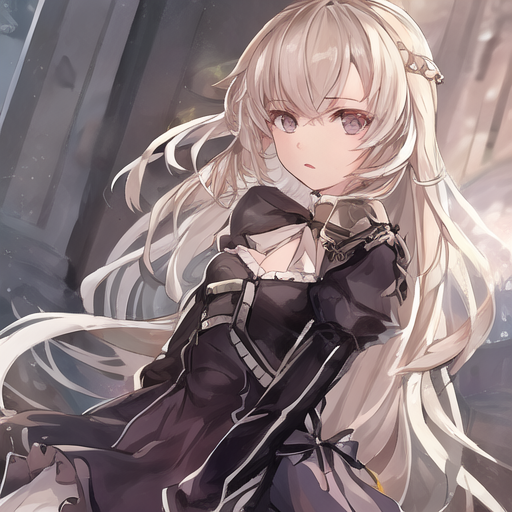
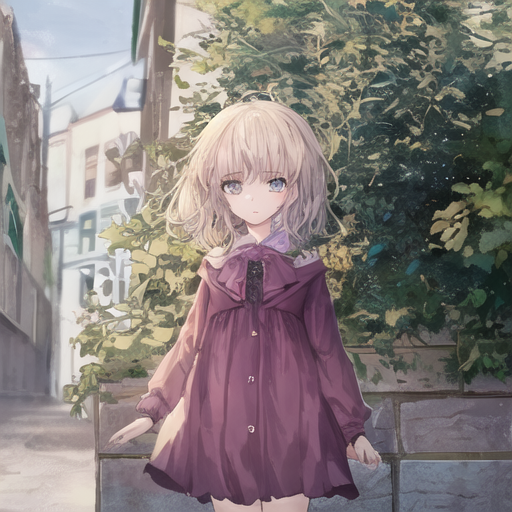
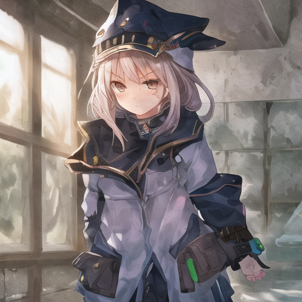
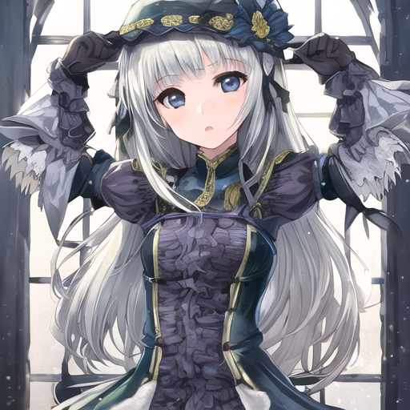

[AI画像生成ノウハウ1]たった3行のpythonコードでAI画像を生成する方法
デモ
以下が実際のコードです
from diffusers import StableDiffusionPipeline
pipe = StableDiffusionPipeline.from_single_file("./AnythingXL_v50.safetensors", num_inference_steps=20)
pipe(prompt="girl", width=512, height=512).images[0].save(f"./janerated.png")
上記のコードを実行して実際に生成された画像は以下の通りです




解説
次は各行の解説をします
1行目
from diffusers import StableDiffusionPipeline
1行目の意味は、「diffusersというライブラリの中にある、StableDiffusionPipelineというファイルを読み込む」です
diffusersライブラリをインストールしないと1行目が実行できないのでご注意ください。
2行目
pipe = StableDiffusionPipeline.from_single_file("./AnythingXL_v50.safetensors", num_inference_steps=20)
2行目ではfrom_single_file関数を使って画像生成モデルを読み込んでいます。
第一引数で画像生成モデルのファイルパスを指定して読み込み、戻り値をpipe変数に代入しています。
この時、pipe変数には実際に画像生成を行うための関数が入っています。
第二引数と第三引数では、生成する画像の横幅と高さを指定しています。
生成する画像が大きいほど、生成に時間がかかるのでお気を付けください。
ですので画像生成には程良い大きさをしていしてあげる必要があります。
おすすめは、横幅512、高さ512。
もしくは横幅512、高さ768がおすすめです。
今回使用した画像生成モデルは、以下のリンクからダウンロードできます。
https://civitai.com/models/9409?modelVersionId=30163。
3行目
pipe(prompt="girl", width=512, height=512).images[0].save(f"./janerated.png")
3行目ではpipe変数に入っている関数を実行します。
第一引数に、どんな画像を生成してほしいかをAIに指示するためのプロンプトを指定しています。
今回は女の子の画像を生成してほしかったので、第一引数に"girl"という文字列を渡しています。
もっと細かく命令したいなら、第一引数を弄ってあげれば大丈夫です。
例えば立っている猫耳女の子の画像が欲しいなら、"girl,cat,stand"などという風に単語をカンマ区切りで並べた文字列を渡すとそれっぽい画像が出来ます。
後は自分が望む良い画像が出るまで生成ガチャを回すだけです。
まとめ
いかがだったでしょうか？。
次回は生成される画像の質を上げる方法について話をしていきたいと思います。
プロンプトやネガティブプロンプトを弄る話以外も沢山します。
実はプロンプトを弄る以外にもできることが沢山あるので、紹介していけたらと思います。
ではまた！